NTU L3 standalone
Created Thursday 13 June 2013
Heat transfer resistance of a heat exchanger with phase change based on the concepts of Number of Transfer Units (NTU). This model requires area fractions of the distinct zones which are calculated using PI controllers. The model can be used stand alone.
1. Purpose of Model
The Purpose is to provide a model based on the NTU approach with an integrated simple and effective way determining the required area fractions for the three zones. This issue is solved by using two PI controllers. The main idea is to compare the required heat to reach the border of a phase with the current available heat which is transferred from one medium to another. The controllers compares the required and the current available heat and adapts the zone sizes.
2. Level of Detail, Physical Effects Considered and Physical Insight
2.1 Level of Detail
Referring to Brunnemann et al. [1], this model refers to the level of detail L3 because the system is modelled distinguishing three distinct zones, namely the vapour zone, the two-phase zone and the liquid zone.
2.2 Physical Effects Considered
- steady state operation at both side and the separating wall
- constant fluid properties with respect to time and spacial extension for each zone
- applying spacial averaged heat transfer coefficients for each zone
- the only heat exchange is between hot and cold fluids
- no axial conduction along the tubes
- Pressure loss is neglected
- Kinetic and Potential energy are neglected
- two 0D energy balances for closed systems are applied to model the energy storage in the walls. There exact geometric position in flow direction of the solid states can not be
2.3 Level of Insight
Heat exchanger type
3. Limits of Validity
Nearly constant fluid properties can be assumed for pure liquids. Heat exchangers operating with phase change or in gases or liquids near the saturation line will lead to lower accuracy
4. Interfaces
In the parameter dialog a number of inputs is expected, which interface the corresponding fluid volumes:
- Inlet specific enthalpy at each side
- Pressure at each side
- Inlet specific heat capacity at each side
- Mass flow rate at each side
- heat transfer coefficient at each side
- Area fraction for each zone
- Geometry parameters
The figure below shows the modular composition of the NTU L3 standalone model in the diagram view. It instantiates ClaRa:Basics:ControlVolumes:SolidVolumes:NTU L3 and two PI-Controllers and contains additional balance equations to provide zone size determination.
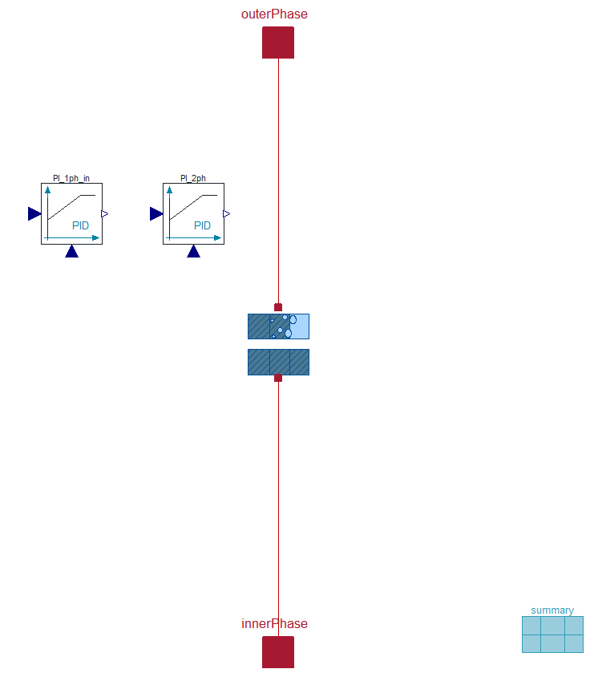
5. Nomenclature
6. Governing Equations
6.1 System Description and General model approach
6.2 General Model Equations
Zone determination
For the determination of the zone sizes PI-Controller, as mentioned in section 4, are used.
Each controller requires a measurement and a set point input signal. These are implemented as follows:
if outerPhaseChange then
PI_yps_A.u_m = noEvent(if A_o_in.T > C_i_in.T then B_o_in.h/1000 else -B_o_in.h/1000); \\Measurement input signal for Controller A PI_yps_A.u_s = noEvent(if A_o_in.T > C_i_in.T then B_o_in.VLE.h_v/1000 else -B_o_in.VLE.h_l/1000); \\Setpoint input signal for Controller A PI_yps_B.u_m = noEvent(if A_o_in.T > C_i_in.T then B_o_out.h/1000 else -B_o_out.h/1000); \\Measurement input signal for Controller B PI_yps_B.u_s = noEvent(if A_o_in.T > C_i_in.T then B_o_in.VLE.h_l/1000 else -B_o_in.VLE.h_v/1000); \\Setpoint input signal for Controller B PI_yps_C.u_m = 0; \\Measurement input signal for Controller C PI_yps_C.u_s = 0; \\Setpoint input signal for Controller C else PI_yps_A.u_m = 0; PI_yps_A.u_s = 0; PI_yps_B.u_m = noEvent(if A_o_in.T > C_i_in.T then -B_i_out.h/1000 else B_i_out.h/1000); PI_yps_B.u_s = noEvent(if A_o_in.T > C_i_in.T then -B_i_in.VLE.h_v/1000 else B_i_in.VLE.h_l/1000); PI_yps_C.u_m = noEvent(if A_o_in.T > C_i_in.T then B_i_in.h/1000 else -B_i_in.h/1000); PI_yps_C.u_s = noEvent(if A_o_in.T > C_i_in.T then B_i_in.VLE.h_l/1000 else -B_i_in.VLE.h_v/1000); end if; if outerPhaseChange then yps_A = PI_yps_A.y; yps_B = max(0,min(1-PI_yps_A.y, PI_yps_B.y)); yps_C = max(0,min(1,1-yps_A-yps_B)); else yps_C = PI_yps_C.y; yps_B = max(0,min(1-PI_yps_C.y, PI_yps_B.y)); yps_A = max(0,min(1,1-yps_C-yps_B)); end if;
The variable h_l represents the saturated liquid and h_v the saturated vapour.

7. Remarks for Usage
- the performance of heat exchangers using this heat resistance model can be displayed using Visualisation:HexDisplay L3
8. Validation
The purpose of these validation scenarios is to illustrate the steady state deviation of the NTU model compared with the discretised pipe model which is based on general physical balance equations.
The deviations particularly in the strong nonlinear course of the specific heat capacity in the gaseous phase (see picture below) and in the transition from the liquid to the gaseous phase must be clarified.
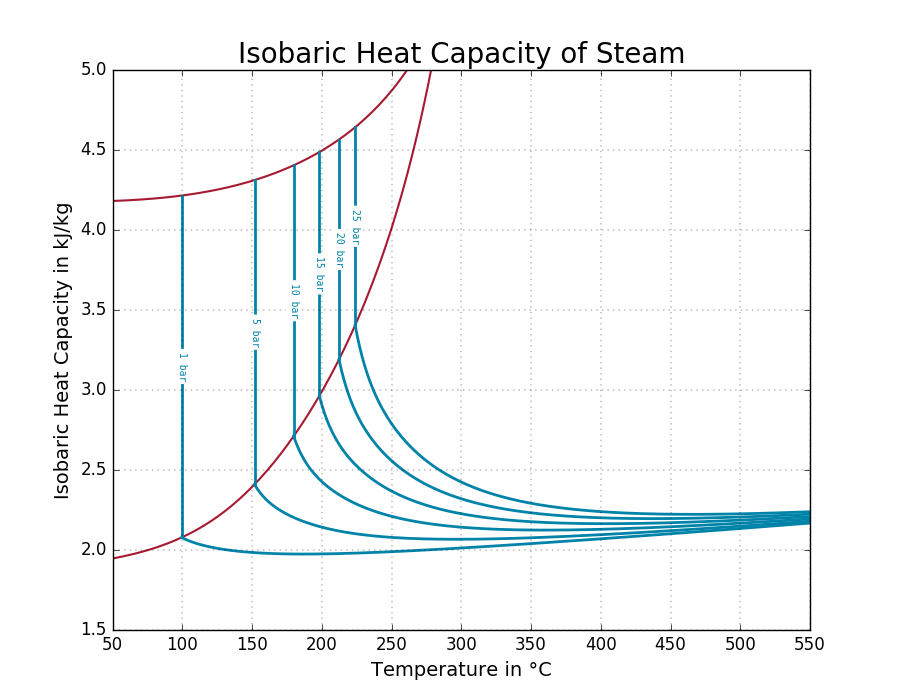
The validation scenarios uses the pipe model Components:VolumesValvesFittings:Pipes:PipeFlow L4 Simple and the NTU model NTU L3.
The Level of detail, the physical effects and the Level of Insight are described in the corresponding links (see above).
The NTU model can be recognised by the following Icon:
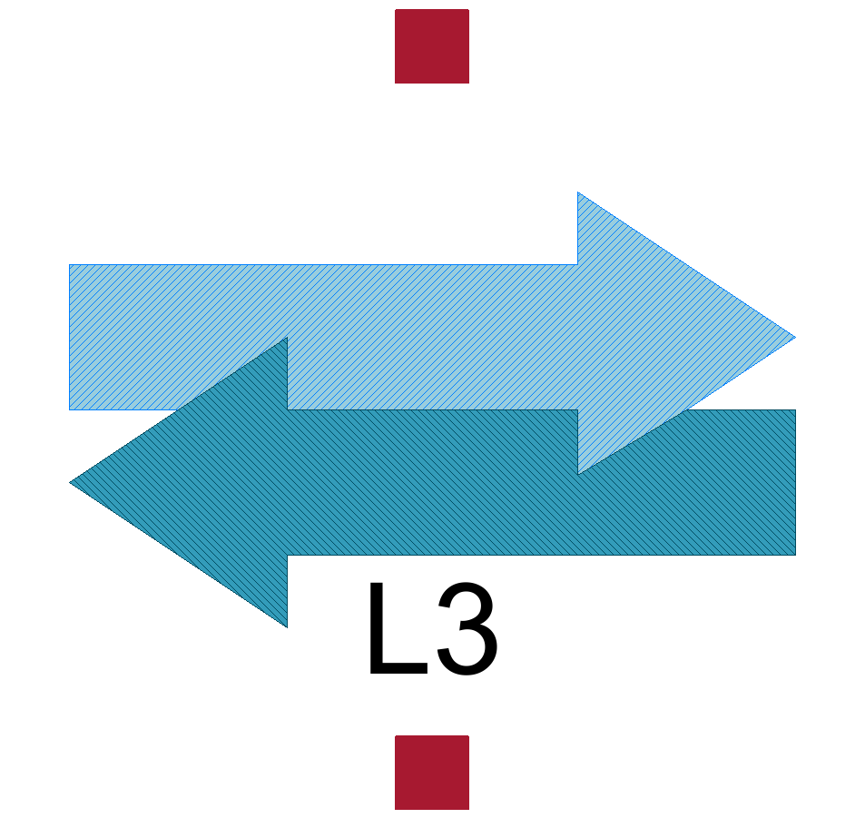
The heat exchanger based on the discretised pipe model can be recognised by the following assembly:
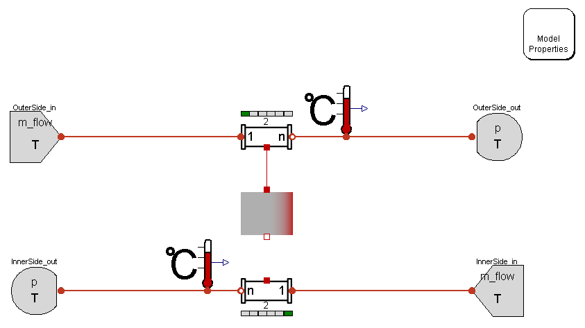
The nomenclature for the pipe models and the governing equation can be looked up in Components:VolumesValvesFittings:Pipes:PipeFlow L4 Simple
The following six scenarios have to be validated:
Scenario 1: Evaporating inner side medium
Scenario 2: Condensing outer side medium
Scenario 3: Condensing inner side medium
Scenario 4: Evaporating outer side medium
Scenario 5: Cooling outer side medium without phase change
Scenario 6: Cooling inner side medium without phase change
Scenario 1: Evaporating inner side medium
Model name:
ClaRa.ControlVolumes.SolidVolumes.Check.Validation_NTUcounter_DiscrPipes_Case1
Model parameters:
parameter SI.Temperature T_i_in = 100+273.15 "Inlet temperature of inner pipe (cold side)"; parameter SI.Temperature T_o_in = 300+273.15 "Outlet temperature of outer pipe (hot side)"; parameter SI.MassFlowRate m_flow_i = 10 "Mass flow rate of inner pipe (cold side)"; parameter SI.MassFlowRate m_flow_o = 100 "Mass flow rate of outer pipe (hot side)"; parameter SI.Pressure p_i = 2e5 "Pressure of inner pipe (cold side)"; parameter SI.Pressure p_o = 300e5 "Pressure of outer pipe (hot side)(cold side)"; parameter SI.CoefficientOfHeatTransfer kc_i = 730 " Heat Transfer Coefficient of inner pipe"; parameter SI.CoefficientOfHeatTransfer kc_o = 7300 "Heat Transfer Coefficient of outer pipe"; parameter Integer Nt = 200 "Number of parallel tubes"; parameter SI.Length d_i = 0.05*2 "Inner diameter of inner pipe (hot side)"; parameter SI.Length d_o = (0.05+1e-6)*2 "Inner diameter of outer pipe (hot side)"; parameter SI.Length L = 4 "Length of pipes"; parameter Integer nCells = ... "Number of cells";
Simulation Setup:
Stop Time: 1500
Number of Intervals: 1500
Algorithm: Dassl
Tolerance: 0.0001
Notes:
- To implement a counter flow heat exchanger it is necessary to connect the pipes in opposite direction.
- The TubeBundle_1D_2_XRG pipe model is applied
- Both pipes have a negligible pressure drop of 100 Pa
The accuracy of the pipe outlet temperature is depending on the number of cells.
The following table shows, how the outlet temperature 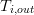 increase with the number of cells and converges to a limit value of approximately 216 °C.

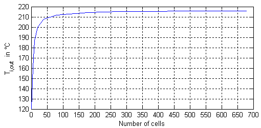
The deviation of the temperature decreases with increasing number of cells as shown in the figure below.
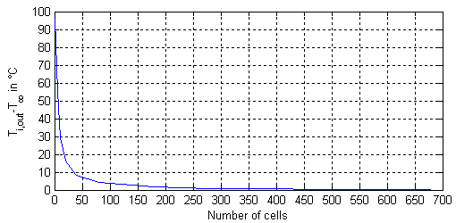
approx. function: 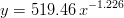
Relative Error definition:
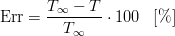
Comparison of the discretised model with 580 cells for each pipe with the NTU counter flow model.
Results
The deviation between NTU model and the discretised model with 580 cells are as follows:
Deviations at the outlet temperature of the cold (inner) side
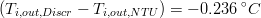
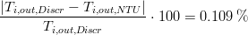
Deviations at the outlet temperature of the hot (outer) side
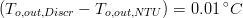
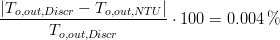
Spacial averaged specific heat capacity
Using a spacial averaged specific heat capacity for the vapour phase (zone A),
cp_i_m = 2085.84 J / kg K
which is determined from the discretised tube model, we get
Scenario 2: Condensing outer side medium
Model name:
ClaRa.ControlVolumes.SolidVolumes.Check.Validation_NTUcounter_DiscrPipes_Case2
Model parameters:
parameter SI.Temperature T_i_in = 20+273.15;
parameter SI.Temperature T_o_in = 413.607+273.15;
parameter SI.MassFlowRate m_flow_i = 10;
parameter SI.MassFlowRate m_flow_o = 1;
parameter SI.CoefficientOfHeatTransfer kc_i = 730;
parameter SI.CoefficientOfHeatTransfer kc_o = 7300;
parameter SI.Pressure p_i = 12e5;
parameter SI.Pressure p_o = 4e5;
parameter Integer Nt = 35;
parameter Integer Np = 1;
parameter SI.Length d_i = 0.05*2;
parameter SI.Length d_o = (0.05+1e-6)*2;
parameter SI.Length r_i = d_i/2;
parameter SI.Length r_o = d_o/2;
parameter SI.Length L = 4;
parameter Integer nCells = 400;
Simulation Setup:
Stop Time: 2000
Number of Intervals: 1000
Algorithm: Dassl
Tolerance: 0.0001
Result:
CPU Time of Discr. model: 192.566 s
CPU Time of NTU-based model: 0.281 s
Scenario 3: Condensing inner side medium
Model name:
ClaRa.ControlVolumes.SolidVolumes.Check.Validation_NTUcounter_DiscrPipes_Case3
Note:
Exchanging the outer side parameters for the inner side parameters from model 2 and switch wall_NTU.outerPhaseChange to false leads to same results.
(The Exchange also includes the initialization parameter)
Scenario 4: Evaporating outer side medium
Model name:
ClaRa.ControlVolumes.SolidVolumes.Check.Validation_NTUcounter_DiscrPipes_Case4
Note:
Exchanging the outer side parameters for the inner side parameters from model 1 and switch wall_NTU.outerPhaseChange to true leads to same results.
(The Exchange also includes the initialisation parameter)
Scenario 5:
Model name:
ClaRa.ControlVolumes.SolidVolumes.Check.Validation_NTUcounter_DiscrPipes_Case5
Model parameters:
parameter SI.Temperature T_i_in = 400 "Temperature of cold side"; parameter SI.Temperature T_o_in = 700 "Temperature of hot side"; parameter SI.MassFlowRate m_flow_i = 30 "Mass flow of cold side"; parameter SI.MassFlowRate m_flow_o = 20 "Mass flow of hot side"; parameter SI.Pressure p_i = 30e5 "Pressure of cold side"; parameter SI.Pressure p_o = 5e5 "Pressure of hot side"; parameter SI.CoefficientOfHeatTransfer kc_i = 100 "Heat transfer coefficient of cold side"; parameter SI.CoefficientOfHeatTransfer kc_o = 100 "Heat transfer coefficient of hot side"; parameter Integer Nt = 100 "Number of parallel tubes"; parameter Integer Np = 1 "Number of passes"; parameter SI.Length d_i = 0.05*2 "Diameter of cold side tubes"; parameter SI.Length d_o = (0.05+1e-6)*2 "Diameter of hot side tubes"; parameter SI.Length r_i = d_i/2 "Diameter of cold side tubes"; parameter SI.Length r_o = d_o/2 "Diameter of hot side tubes"; parameter SI.Length L = 3 "Length of tubes"; parameter Integer nCells = 30 "Number of Cells";
Simulation Setup:
Stop Time: 1000
Number of Intervals: 5000
Algorithm: Radau IIa
Tolerance: 1e-7
Result:
CPU Time : 7.737 s
Scenario 6:
Model name:
ClaRa.ControlVolumes.SolidVolumes.Check.Validation_NTUcounter_DiscrPipes_Case6
Note:
Exchanging the outer side parameters for the inner side parameters from model 5 and switch wall_NTU.outerPhaseChange to true leads to same results.
(The Exchange also includes the initialisation parameter)
9. References
[1] Johannes Brunnemann and Friedrich Gottelt, Kai Wellner, Ala Renz, André Thüring, Volker Röder, Christoph Hasenbein, Christian Schulze, Gerhard Schmitz, Jörg Eiden: "Status of ClaRaCCS: Modelling and Simulationof Coal-Fired Power Plants with CO2 capture", 9th Modelica Conference, Munich, Germany, 2012
10. Version History
07.09.2012 - Version 0.1 - Ala Renz
Backlinks: ClaRa:Basics:ControlVolumes:SolidVolumes:NTU L3